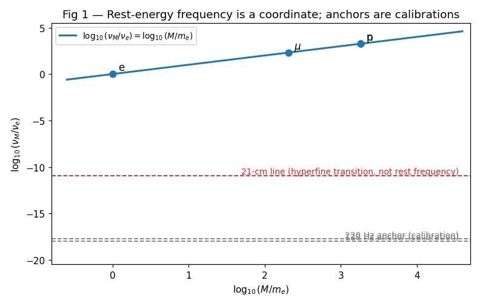
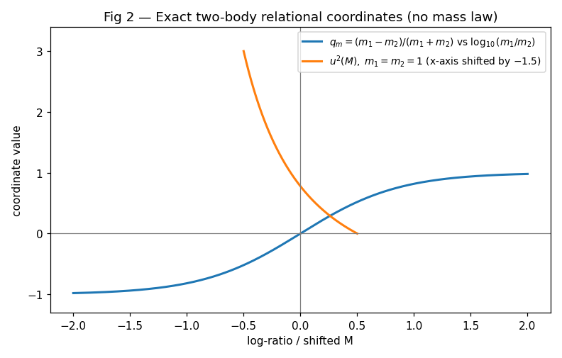
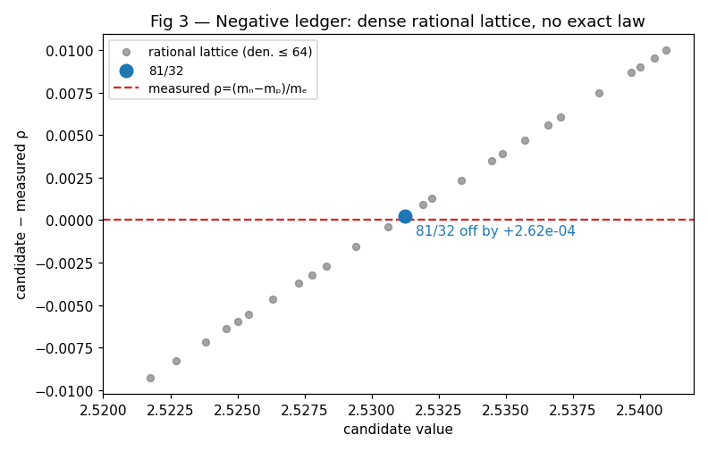
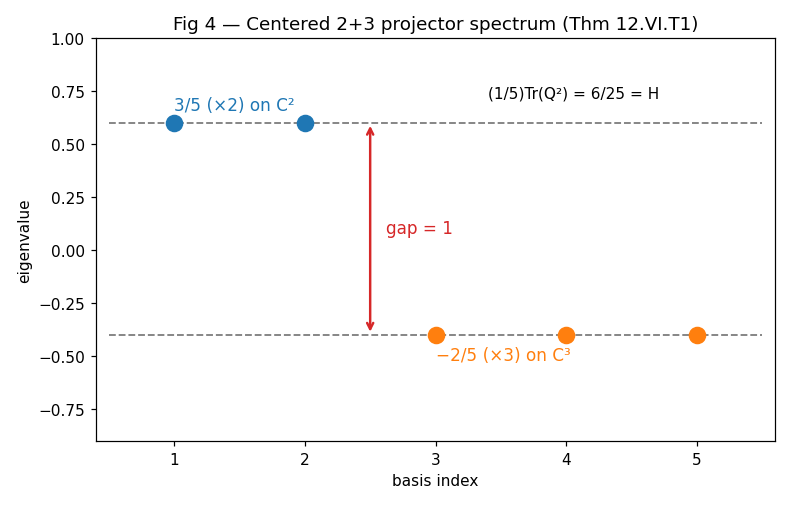
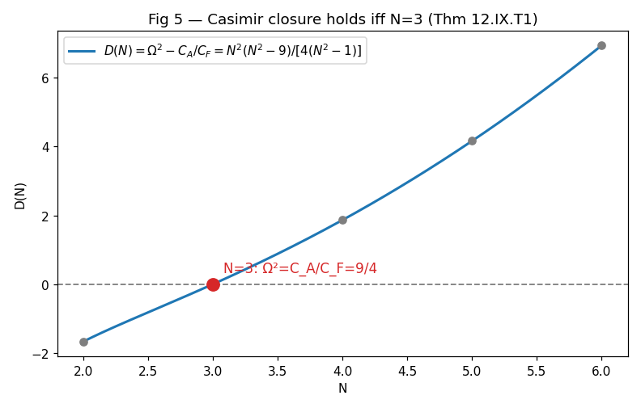
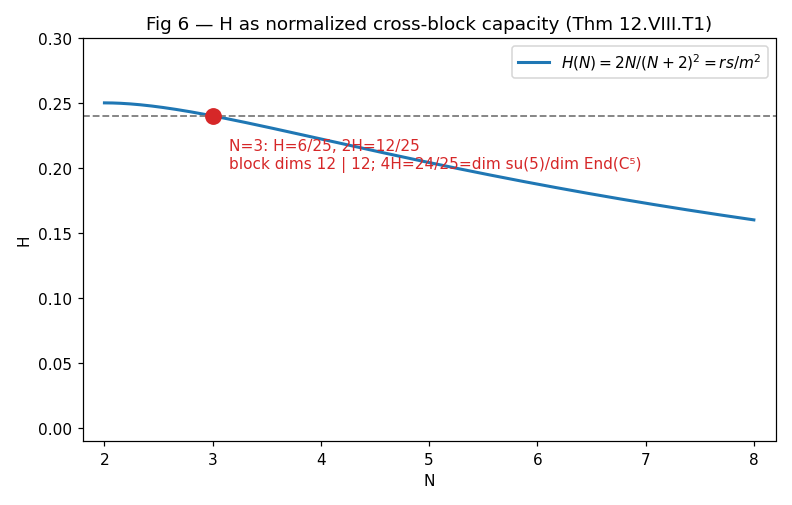
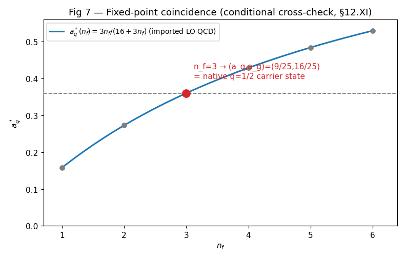

A restructured rewrite of R Theory — Volume II, Book 12 (source: volume2_full.txt lines 4811–5228). Pictures first, then the audit.
About this rewrite. This is a restructuring of Book 12, not a new result. Every theorem, ledger entry, and status label below comes from the original manuscript; no mathematics has been added. What changed is the order of presentation:
Part I shows the mathematics — graphs first, intuition second, with each picture pointing
to the section that proves it.
Part II runs the formal audit: every claim against the Volume I theorem ledger, with exactly
one scope label each.
Part III states the book's theorems with their labels.
Part IV closes the book and quotes the dependency lock to Book 13 verbatim.
Intuition is labeled as intuition. Theorems are labeled as theorems. Scope tags (COMPLETED SYMBOLIC CHECK, MANUSCRIPT ASSERTION, INCORRECT RESULT, …) are the audit's, not the manuscript's.
Graph honesty. Each graph below is a live Desmos calculator with a static PNG fallback generated from the same formulas. The live embeds were not verified in a browser — this pipeline has no live-browser access — so static verification plus numerical verification of the plotted mathematics (real assertions, not eyeballing) is the standard applied. The PNG fallbacks are always available.

For a supplied invariant mass M, define ν_M = Mc²/h. Then M = hν_M/c² — the map is invertible for M > 0, so rest-energy frequency carries exactly the information already contained in mass. Nothing is derived; a coordinate is displayed.
That is why the book opens with an airlock (§12.I): a coordinate change is not a mass law, a transition frequency is not a rest-energy frequency, and a fitted reference pitch is not a parameter-free prediction. The direct harmonic search — hunting mass ratios in musical lattices — closes negatively. The book's strongest positive result comes from somewhere else entirely: the already-derived 2+3 carrier and its representation geometry (§12.VI onward).

For two positive masses, λ_m = ln(m₁/m₂) and q_m = (m₁−m₂)/(m₁+m₂) satisfy (1+q_m)/(1−q_m) = m₁/m₂ exactly; with relative rapidity η and q_v = tanh(η/2), the imported two-particle invariant reads s = 2m₁m₂(cosh λ_m + cosh η); below threshold the binding coordinate u² = [(m₁+m₂)²−M²]/[M²−(m₁−m₂)²] inverts exactly, and in the weak-binding limit B = 2μu² + O(u⁴).
Every one of these is bookkeeping: true by algebra, silent about which masses nature chose. The book says so explicitly — "exact relational coordinates; they do not determine the observed masses or binding energies." That sentence is the whole of §12.III's epistemic content, and it is honest.

The historical relation (m_n−m_p)/m_e ≈ 81/32 is genuinely close — and genuinely not exact. The nonzero discrepancy, tiny as it looks, is enormous next to the parts-per-10⁷ precision of the mass measurements. It cannot be promoted to an exact mass law.
The deeper point, drawn in Figure 3: dyadic, fifth-generated, octave, comma, and other rational lattices are dense with near-misses. Unless the candidate family and the selection rule were frozen before the target was inspected, finding a close rational is numerology with hindsight, not a derivation. Light-quark masses stay quarantined until a renormalization scheme and scale are fixed. Conclusion of the direct harmonic route: rest-energy frequency is a coordinate, musical anchors are calibrations, the rational matches generate no masses, and no Projection-specific mass spectrum has been obtained.

Here is the book's turn. On the positive principal branch the canonical transfer is λ = saw_r = (1+sin x−cos x)/2, 1−λ = saw_x, Ω = λ/(1−λ) = cxp/srx, H = λ(1−λ) = sin(2x)/4 — all exact identities (§12.V, and λ = 1/urx ties this λ to the Volume I transfer coordinate).
Now inherit W = ℂ²⊕ℂ³ from Books 5–6 and form the centered projector Q = P₂ − (2/5)I = (3/5)P₂ − (2/5)P₃. The 2/5 is not chosen: it is the unique constant making Tr(Q) = 0. The spectrum falls out: 3/5 on ℂ², −2/5 on ℂ³, gap 3/5 − (−2/5) = 1, and (1/5)Tr(Q²) = (1/5)(2·9/25 + 3·4/25) = 6/25 = H. The positive eigenvalue 3/5 selects λ = 3/5; through the transfer map its unique principal-branch half-angle preimage is q = sxp = 1/2, i.e. (srx,sxp,cxp,crx) = (2,1/2,3,1/3), Ω = 3/2, H = 6/25.
The logical direction is W → centered projector → λ = 3/5 → q = 1/2, not the reverse: the distinguished state is an output of the block geometry, not an input tuned to reproduce it. With orientation sign ε, Q_ε = ε[λP₂ − (1−λ)P₃] has signed spectral gap ε (recorded as FlatWave — orientation only, no physical label), while the quadratic size is |H|.

Generalize to W_N = ℂ²⊕ℂ^N and Q_λ = λP₂ − (1−λ)P_N. Requiring orthogonality to the common scalar phase, Tr(Q_λ) = 0, gives 2λ − N(1−λ) = 0, i.e. λ = N/(N+2) and Ω = N/2. The transfer odds are the scale-free relative-center ratio — again derived from centering, not fitted to a block-charge ratio. For N = 3 this independently reproduces λ = 3/5, Ω = 3/2: a consistency check between two routes to the same state, not a post-hoc fit.
Then the Casimir comparison. For SU(N) in the standard normalization, C_A = N, C_F = (N²−1)/(2N), so C_A/C_F = 2N²/(N²−1), while the relative-center theorem gives Ω² = N²/4. Their difference is exactly N²(N²−9)/[4(N²−1)] — zero for integer N ≥ 2 iff N = 3 (Theorem 12.IX.T1). At N = 3: C_A = 3 = cxp, C_F = (3−1/3)/2 = (cxp−crx)/2 = 4/3, and C_A/C_F = 9/4 = Ω². An exact cross-invariant theorem on the mathematical carrier family — which does not by itself identify the N = 3 block with physical QCD color.

At the native state the reciprocal pairs are rank/inverse-rank pairs of the blocks: (srx,sxp) = (2,1/2) for ℂ², (cxp,crx) = (3,1/3) for ℂ³ — hence the trace-removal maps Π₂(X) = X − (1/2)Tr(X)I, Π₃(X) = X − (1/3)Tr(X)I, and the exact arithmetic srx²−1 = 3 = dim\,su(2), cxp²−1 = 8 = dim\,su(3) (representation identities at the native state; no physical gauge interpretation is claimed).
For a general r+s split with m = r+s and λ = s/m: H = λ(1−λ) = rs/m². But dim_ℂ Hom(ℂ^r,ℂ^s) = rs and dim_ℂ End(ℂ^m) = m² — so H is the normalized complex dimension of one directed cross-block operator sector (Theorem 12.VIII.T1); the full off-diagonal sector has normalized size 2H. The block-preserving traceless sector has dimension r²+s²−1, equal to 2rs iff (r−s)² = 1 — for 2+3, 12 and 12.

Import standard QCD (PHYSICS IMPORT 12.X.P1, with the projection contract 12.X.PC1 identifying the derived ℂ³ block with the color fundamental for this comparison). Only after that contract does the internal Ω² = 9/4 become the physical color-factor ratio C_A/C_F = 9/4 — and jet-multiplicity determinations are consistent with it (measured C_A/C_F ≈ 2.29 ± 0.06 ± 0.14 vs 9/4 = 2.25). This is a parameter-free empirical witness, the book stresses — not a new observable difference, because ordinary QCD predicts the same number.
For fixed n_f, leading-order singlet evolution has the asymptotic momentum partition a_q^* = 3n_f/(16+3n_f), a_g^* = 16/(16+3n_f). Declare the positive square-root carrier map cos x = √a_q, sin x = √a_g; then exactly V = a_q − 1/2 = cos(2x)/2 and H = (1/2)√(a_q a_g) = sin(2x)/4, consistent with the Volume I carrier. At the native q = 1/2 point, (cos x, sin x) = (3/5, 4/5), so (a_q, a_g) = (9/25, 16/25) — and equating with the asymptotic partition selects n_f = 3 uniquely (tan x = 4/3, tan²x = 16/9, sec²x = 25/9). The book's own closure files this as a conditional cross-check: an adapted-coordinate expression of imported QCD dynamics. Projection does not derive DGLAP evolution — and the physical caveat is stated: fixed n_f = 3 is an idealized three-flavor theory; the real Standard Model crosses heavy-quark thresholds.
Dependency Rule. Volume II inherits only results already earned in Volume I (Books 0–6), together with ordinary background mathematics and explicitly named physics imports. A result from Books 0–6 used later is an upstream dependency, never silently re-derived.
Canonical Notation Bridge. srx = |csc x|+cot x, sxp = 1/srx, cxp = |sec x|+tan x, crx = 1/cxp; urx = srx−crx, uxp = cxp−sxp; H = sin(2x)/4; λ = saw_r = (1+sin x−cos x)/2; Ω = λ/(1−λ) = cxp/srx; ε = FlatWave = sgn(sin 2x).
Governing Status Rule. Exact internal mathematics, declared extensions, projection contracts, physics imports, conditional theorems, empirical witnesses, obstructions, and promotion records stay distinct. A physical promotion requires a nonempty operational difference set Δ_op.
FlatWave discipline. FlatWave carries the discrete orientation sign and must not be conflated with helicity, charge sign, mirror orientation, or any other downstream physical label without a declared contract. Book 12 complies: it uses FlatWave only as the orientation sign ε in Q_ε.
Every upstream inheritance claim in Book 12, checked against ~/workspace/wolfram/theorem_ledger.md:
Flag — (1/5)Tr(Q_ε²) = |H| (source.txt line 187)
With Q_ε = ε[λP₂ − (1−λ)P₃] and general λ, the manuscript states (1/5)Tr(Q_ε²) = |H|. Directly: (1/5)Tr(Q_ε²) = (2λ² + 3(1−λ)²)/5, whereas |H| = λ(1−λ) on (0,1). Equality holds only at λ = 3/5 and λ = 1/2 (solutions of 10λ² − 11λ + 3 = 0). Counterexamples:
The surrounding paragraph concerns the native state, where λ = 3/5 and the identity is true (6/25 both sides). Scope: INCORRECT RESULT as a general identity; true at the native state. The adjacent claim — signed spectral gap = ε — is exact for all λ ∈ (0,1) (verified).
Theorem 12.II.T1 — Coordinate equivalence
M ↔ ν_M invertible for M > 0; rest-energy frequency carries exactly the information in mass. CHECKED PROOF (elementary).
Corollary 12.II.C1
Octave reduction / pitch naming / reference-frequency comparison is display/calibration unless an independent law selects the reference. MANUSCRIPT ASSERTION (methodological).
Negative Theorems 12.II.N1, 12.II.N2
128/220 Hz anchors are calibrations, not kernel derivations (NEGATIVE THEOREM); the 21-cm line is a hyperfine transition frequency, not substitutable for Mc²/h (STANDARD IMPORTED THEOREM + COMPLETED NUMERICAL CHECK).
Theorem 12.VI.T1 — Spectral recovery
Q = P₂ − (2/5)I has eigenvalues 3/5 on ℂ², −2/5 on ℂ³; gap 1; (1/5)Tr(Q²) = 6/25 = H; hence λ = 3/5, q = sxp = 1/2, (srx,sxp,cxp,crx) = (2,1/2,3,1/3), Ω = 3/2. COMPLETED SYMBOLIC CHECK — conditional on the inherited carrier (see §9).
Theorem 12.VII.T1 — Relative-Center Transfer Theorem
Tr(Q_λ) = 0 ⇒ λ = N/(N+2), Ω = N/2 on the 2+N family. COMPLETED SYMBOLIC CHECK.
Theorem 12.VIII.T1 — Cross-Block Capacity Theorem
H = dim\,Hom(ℂ^r,ℂ^s)/dim\,End(ℂ^{r+s}) = rs/m². COMPLETED SYMBOLIC CHECK (dimension facts STANDARD).
Theorem 12.IX.T1 — Relative-Center Casimir Closure
Ω² = C_A/C_F ⟺ N = 3 for integer N ≥ 2. COMPLETED SYMBOLIC CHECK (Casimir normalizations STANDARD).
Physics Import 12.X.P1 / Projection Contract 12.X.PC1
Standard QCD with SU(3) color; the derived ℂ³ block identified with the color fundamental for this comparison. PHYSICS IMPORT / PROJECTION CONTRACT — declared, not derived. The 9/4 jet-multiplicity agreement is an EMPIRICAL WITNESS (measured C_A/C_F = 2.29 ± 0.06 ± 0.14 vs 9/4; ordinary QCD predicts the same value).
§12.XI — Quark–gluon momentum fixed point
Imported LO partition a_q^* = 3n_f/(16+3n_f) (STANDARD IMPORTED THEOREM); the carrier's (9/25,16/25) meets it at n_f = 3 uniquely (COMPLETED SYMBOLIC CHECK). The coincidence is a CONDITIONAL CROSS-CHECK — an empirical-numerical agreement between earned carrier and imported dynamics, not a derivation of n_f, QCD, or DGLAP.
Negative Theorem 12.XII.N1 — Projection phase is not affine RG time
The intrinsic coordinate derivative does not generate DGLAP evolution; QCD supplies the traversal law. NEGATIVE THEOREM (premise verified in §11; chain-rule computation COMPLETED SYMBOLIC CHECK).
Book 12 closes with the following, in its own words — each kept in its category:
What the lock asserts. A positive inheritance list — Book 13 may take λ, 1−λ, H, Ω, FlatWave, reciprocal access, and the centered-projector spectral interpretation — and a negative list that does not transfer: probability, entropy, thermodynamic time, irreversibility, microscopic multiplicity, and seam dynamics do not follow from those identities, and any statistical or thermodynamic meaning needs its own declared contract. Cophase location, log-odds v, hidden-state rank, physical time, and momentum-like limits stay distinct unless an explicit map identifies them. The lock is a fence, not a result: it permits inheritance and forbids silent promotion.